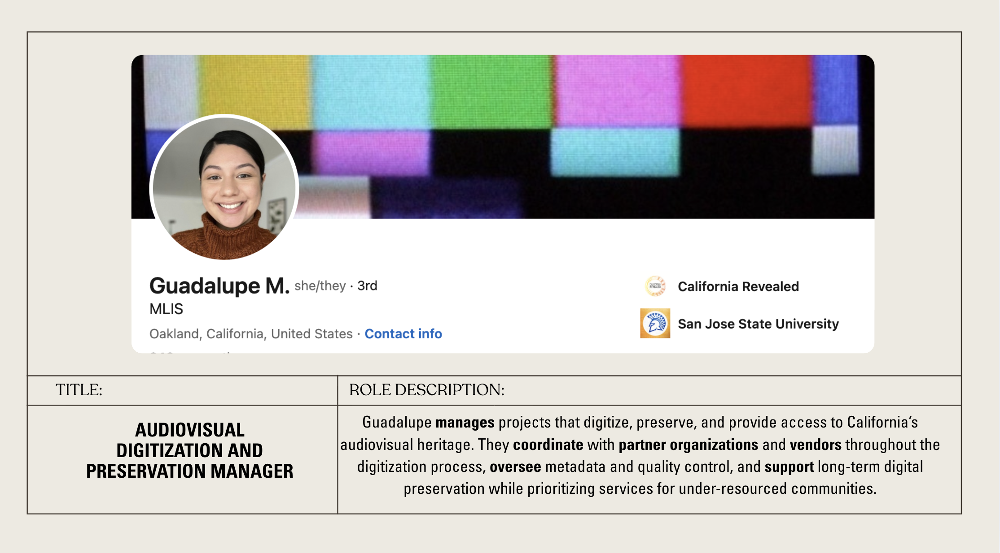

California Revealed is a statewide digitization initiative which helps public libraries, archives, museums, historical societies, and other heritage groups digitize, preserve, and provide online access to archival materials documenting the state's histories, arts, and cultures. It also provides support and assistance for cataloging, community archiving, and K-12 curriculum development, and provides training and support for Memory Labs at public libraries across California. It began in 2010 as CAVPP as a temporary program funded by the California State Library, and since then has grown in capability, scope, and demand year after year.
As Audiovisual Digitization and Preservation Manager, Guadalupe Martinez manages and oversees California Revealed projects from application review to long-term preservation. This involves coordinating with partner organizations to write basic metadata for and then ship their collections, which are then processed, documented, and given further metadata before being sent to third-party vendors for digitization. Once digitized, they are checked for fixity and to see if metadata has been assigned correctly, and Guadalupe and other preservation managers will communicate with the digitization vendor in the case of any discrepancies. The initial quality control report is then sent to partners to be signed off, but this is not always done as familiarity with QC varies from organization to organization.
If requested, partners will then be given a physical hard drive of their digitized materials. Digitized collections are finally given three points of access, one being access copies stored on an AWS web server, and the other two being LTO tape copies with preservation quality files kept on them, one of which is kept at California Revealed in Sacramento, and the other of which is sent to a vault in Ohio. Throughout this process Guadalupe consults partners, preservation experts, vendors, and third-party services to resolve issues, establish trust, and explain A/V preservation at various levels.
As Audiovisual Digitization and Preservation Manager, Guadalupe is responsible for assessing the feasibility of intaking a digitization project from community heritage group partners, adapting the partner’s initial metadata to California Revealed’s formatting standards, and coordinating the digitization and preservation of the materials with an external vendor. In addition to project management, Guadalupe creates educational resources such as handbooks to help demystify the digitization process and the jargon surrounding it for their community in an effort to not only help them be better stewards of their materials but to also help gain their trust as partners.
One specialty she performs as Manager is establishing a priority of care for communities based on FEMA Natural Risk Index for Natural Hazards and Healthy Places Index (HPI) scores. Such factors that are taken into account for FEMA results are the risks for climate disaster, while HPI is concerned with employment and education opportunities, air quality and access to clean water, among others impacting life expectancy. Guadalupe emphasized the importance of providing “more access to people who are already being under-resourced in other aspects of their lives, not just from a historical standpoint.” Collecting this information is vital for not only better understanding the preservation needs and level of impact California Revealed can have but also can justify further funding.
Three similar job descriptions at similar levels of seniority are: